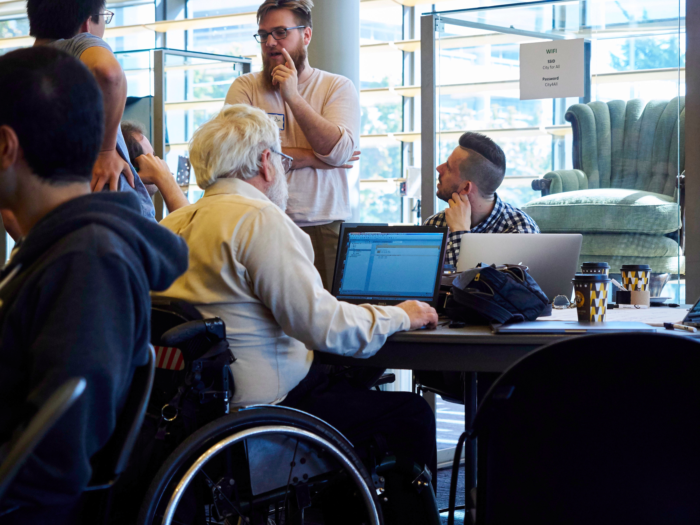
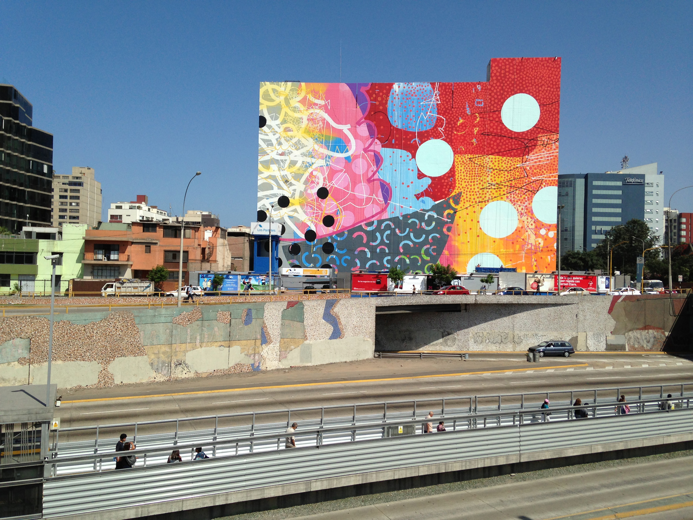

ISUD XII World Congress:
PHILOSOPHY IN AN AGE OF CRISIS: CHALLENGES AND PROSPECTS
Recap
More than 400 young men and women displayed their intelligence and creativity during the International Society For Universal Dialogue's 12th Annual World Congress in Lima, Peru from July 10th-15th 2018. The Congress featured a geographically and culturally diverse group of scholars representing 39 countries from North and South America, Europe, Asia, Africa, and Pacific Island nations. Approximately 145 scholars attended and presented original research at the Congress. A spirit of good will and eagerness to engage in and cultivate inter-cultural philosophical dialogue pervaded the dynamics of the meeting.

- 
- 